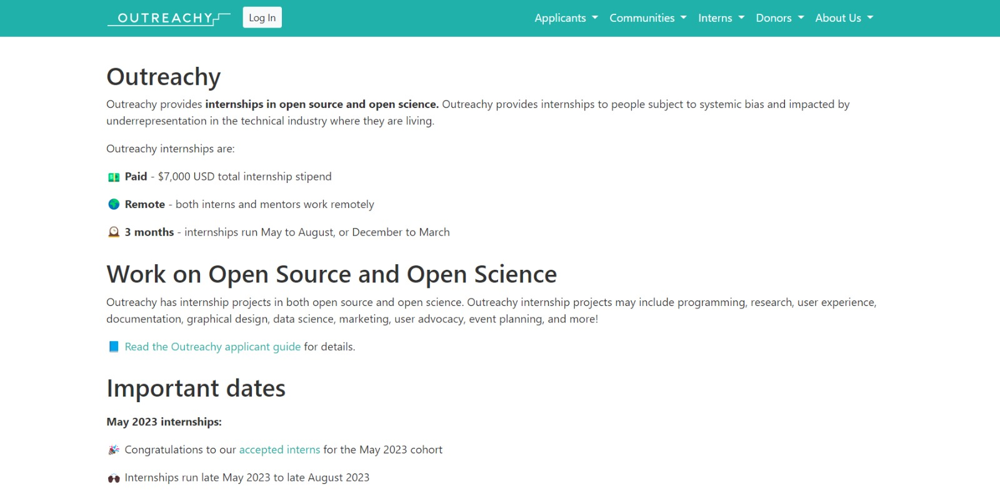

Introduction
The world of open source offers abundant opportunities for growth and impact. However, diving into it can be daunting for newcomers. Thankfully, initiatives exist to bridge the gap between aspiring contributors and open source communities.
Outreachy is one such project that partners with open source and open science communities to provide internships to underrepresented individuals in the tech industry. We were fortunate to be selected as interns at Bioconductor through Outreachy, where we experienced the open source world of computational biology. Whether you’re a biologist seeking information on our tools or an Outreachy applicant interested in Bioconductor, this blog post will provide valuable insights!
Outreachy
Outreachy is a program offering a paid 12-week remote internship in open source and open science. It aims to empower individuals facing systemic bias and underrepresentation in tech. Outreachy interns collaborate with experienced mentors on projects spanning programming, user experience, documentation, design, data science, marketing, advocacy, and community events.

The application process involves three stages, where applicants contribute to 1-2 projects of their choice. Through Outreachy, we were selected to work with Bioconductor on our chosen projects.
Bioconductor: Empowering Open Science
Three interns and three Bioconductor community projects are participating in the May 2023 Outreachy internship round. In this blog post, we will provide an overview of our projects and share our experiences thus far, exploring the fascinating realm of Bioconductor.
Sonali’s Experience: Making Strides with Sweave2Rmd

I’m Sonali Kumari, a B.Tech student specializing in Electronics and Communication Engineering with a passion for Artificial Intelligence. Currently pursuing my studies at IGDTUW in Delhi, I find immense joy in working with open-source organizations that offer unique opportunities for learning, collaboration, and remarkable achievements, even in remote settings. With a diverse range of interests spanning technology and open science, I strive to merge technical expertise with a strong inclination towards research.
During the May 2023 internship round, I had the privilege of participating in the Outreachy Internship program with Bioconductor. This experience has been incredibly rewarding, as it has not only exposed me to the world of open science and open source but has also taught me how to collaborate effectively in a remote work environment. Despite the initial challenge of familiarizing myself with various concepts within a limited timeframe, my journey has been smoother than anticipated. I want to express my heartfelt appreciation to my mentor, Jen Wokaty, who has been an exceptional guide, always steering me in the right direction whenever I faced challenges. Their mentorship has taught me invaluable lessons in problem-solving, finding joy in my work, and so much more. I am immensely grateful for the knowledge and skills I have acquired under their guidance.
In this blog post, I want to share my enriching experience and the remarkable work I have been doing as part of the Sweave2Rmd project at Bioconductor. The sweave2rmd project focuses on converting vignettes from Sweave to R Markdown format, which plays a crucial role in modernizing the documentation of Bioconductor packages. Traditionally, the documentation has been written using a combination of LaTeX and R code, resulting in PDF files. By transforming these files into R Markdown format and rendering them as HTML files, we make the documentation more accessible, shareable, and interactive.
Throughout my internship, I have made significant contributions to the sweave2rmd project. Some of my accomplishments include:
- Converting numerous vignettes from Sweave to R Markdown format
- Collaborating with maintainers to address issues and improve the conversion process
- Taking the lead in maintaining the project board and tracking progress
- Exploring automation processes to streamline the conversion workflow
- Enhancing the project’s documentation for better usability and clarity
These experiences have not only honed my technical skills but have also allowed me to gain a deeper understanding of package development and documentation creation within the vibrant Bioconductor community. I’m proud to have submitted a total of 12 pull requests (PRs), out of which 8 have been successfully merged into Bioconductor in just one month. I am thrilled to continue making a meaningful impact on the project.
If you’re interested in reading more about my experience as an Outreachy intern with Bioconductor and my journey with the sweave2rmd project, I invite you to visit my blog. I share insights, challenges, and lessons learned along the way.
I would like to express my sincere gratitude to Bioconductor, my mentors, and the entire community for providing me with this invaluable opportunity. Together, we are shaping the future of open science and making a difference in the world of scientific documentation.
DaenaRys Experience: Working on the miaverse Project
I am a final-year computer science student from Cameroon with a love for computers and technology. My fascination with biotechnology led me to choose the miaverse project under Bioconductor.
The miaverse is a microbiome analytics framework that combines both tools and documentation. The idea is to provide not only tools but also tutorials that help users with different skill levels to perform microbiome downstream analysis. The miaverse project focuses on optimizing unit tests in the miaverse packages, including mia, miaTime, miaViz, and miaSim, which are essential tools for analyzing microbiome data. In addition to optimization of unit tests and examples, current task include, improving documentation in packages, creating an example microbiome data science workflow from database to results, optimization of certain methods and testing, issue reporting, bug fixing.
I chose this project because of my passion for biotechnology and my fascination with the intricate interactions that occur within a microbiome. However, as I delved deeper into the project, I realized that analyzing microbiome data can be quite challenging due to the vast amounts of complex data involved. Therefore, I became determined to optimize the miaverse packages to make microbiome data analysis more efficient and accurate.
Working on the miaverse project has been an unforgettable experience for me. Throughout the project, I have had the pleasure of working closely with my mentor, Tuomas Borman. Tuomas’ expertise in the field has helped me understand the complexities involved in microbiome data analysis, and he has provided valuable feedback on my work.
The project itself has been challenging but rewarding, as it has allowed me to develop important skills such as problem-solving, teamwork, and communication. Through the optimization process and documentation unification, I have learned how to create user-friendly tools that can be used by a broad audience.
I am proud of the work I have accomplished so far and grateful for the opportunity to develop important skills during this internship with the aim of using technology to facilitate biotech data processes and analysis.
To find out more about my Outreachy experience and internship with Bioconductor, you can visit my blog at daenarys.dreamwidth.org.
Atrayee’s Experience: Microbiome Study Curation

Hello! I am Atrayee Samanta, an undergraduate student at IIEST Shibpur, India. I am currently pursuing a B. Tech in Computer Science and Technology. I love reading books, watercolour painting and music.
How I came to know about Open Source and the Outreachy Internships
When I was just starting out as a sophomore, while exploring about the many ways people can make a difference in computer science, I came across the many ways in which beginners could contribute to projects that made a difference, however small it was. I was fascinated by the world of open-source software and the way it operates. What drew me to this community was its collaborative nature. The idea that people from all over the world could come together to contribute their expertise and collectively create something truly remarkable was truly wonderful!
While surfing the web, I came across what seemed to me a brilliant opportunity to learn and contribute: the Outreachy internship. What drew me to it was the nature of the internship: we had to contribute to projects of our own choice for a month, and that meant that whether or not I got the internship, I would definitely get a chance to learn and interact with the open-source community! Once my initial application period was over, I took a few days to go over the many projects listed on the platform, for which we could choose to contribute.
The Microbiome Study Curation Project at Bioconductor
A lot of the projects were very appealing but what stood out to me was the ‘Microbiome Study curation’ project at BugSigDb; for me, it was quite different to the others and while it wasn’t extremely tedious, it was fascinating to learn about the project: I realized how I wasn’t even properly aware of how epidemiological studies and research on samples of varying sizes and nature are critical for medical research, how they play a crucial role in medical research by providing insights into the distribution, causes, and prevention of diseases within populations. These studies involve the collection, analysis, and interpretation of data from large populations over time, and can help to identify risk factors, patterns of disease occurrence, and potential interventions that can improve public health.
The Outreachy contribution period was one of the best experiences I have ever had as a student. I genuinely loved making contributions and learning. My mentors, Chloe and Fatima as well as the BugSigdb community- Professor Levi and others always helped me out whenever I got stuck on a problem or had an issue in understanding something.
About the Project
The Microbiome Study curation project mainly deals with reviewing existing epidemiological studies on BugSigdb and curating new studies on BugSigdb.
Throughout my internship, the contributions I have made include:
- Reviewing existing curations of epidemiological studies on Bugsigdb
- Finding and curating more epidemiological studies
- Learning about the data analysis process using R and implementing it
It has been a great source of knowledge for me, and has broadened my views as well as technical skills for understanding scientific articles, conducting a literature review and carrying out data analysis. The wonderful community at Bioconductor has only always helped me out and has provided me with a richer understanding of everything I’ve been doing! I’m really glad to be a part of this project. If you want to know more, I would love to introduce to you my blog, where I record my progress as well as my experiences and learnings.
Upcoming Opportunities at Outreachy and Bioconductor!
Applicants who are interested in this amazing Outreachy internship for the December 2023 cohort can apply for the internship starting in early August. Interested mentors can also sign up and submit their open source projects in early August.
At the upcoming Bioc2023 conference in August, we’ll also have an Outreachy Birds of a Feather with Beryl Kanali and Kirabo Kakopo who were Outreachy interns in December 2022. The Bioconductor community coordinator for Outreachy, Jennifer Wokaty, will also cover how to submit a good open source project to Outreachy.